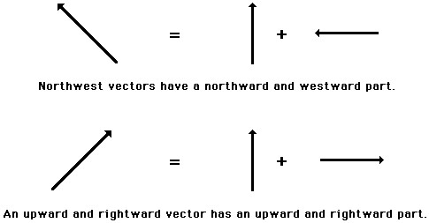
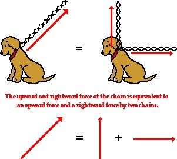
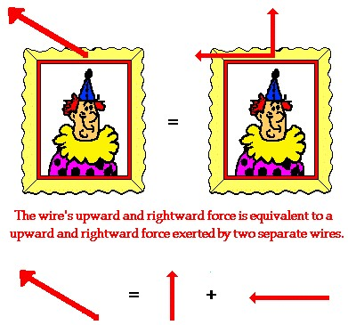

A vector is a quantity that has both magnitude and direction. In the first couple of sections of this tutorial, all vectors that we discussed were simply directed up, down, left or right. In the free body diagram section, depicting the forces acting upon an object, each individual force was directed in one dimension - either up or down or left or right. When an object had an acceleration and we described its direction, it was directed in one dimension - either up or down or left or right. Now in this unit, we begin to see examples of vectors that are directed in two dimensions - upward and rightward, northward and westward, eastward and southward, etc.
What is a Component?
In situations in which vectors are directed at angles to the customary coordinate axes, a useful mathematical trick will be employed to transform the vector into two parts with each part being directed along the coordinate axes. For example, a vector that is directed northwest can be thought of as having two parts - a northward part and a westward part. A vector that is directed upward and rightward can be thought of as having two parts - an upward part and a rightward part.
Any vector directed in two dimensions can be thought of as having an influence in two different directions. That is, it can be thought of as having two parts. Each part of a two-dimensional vector is known as a component. The components of a vector depict the influence of that vector in a given direction. The combined influence of the two components is equivalent to the influence of the single two-dimensional vector. The single two-dimensional vector could be replaced by the two components.
Angled Vectors Have Two Components
If the dog in the image (let’s name him Fido) has a chain that is stretched upward and rightward and pulled tight by his master, then the tension force in the chain has two components - an upward component and a rightward component. To Fido, the influence of the chain on his body is equivalent to the influence of two chains on his body - one pulling upward and the other pulling rightward. If the single chain were replaced by two chains. with each chain having the magnitude and direction of the components, then Fido would not know the difference. This is not because Fido is unintelligent, but rather because the combined influence of the two components is equivalent to the influence of the single two-dimensional vector.
Consider a picture that is hung to a wall by means of two wires that are stretched vertically and horizontally. Each wire exerts a tension force upon the picture to support its weight. Since each wire is stretched in two dimensions (both vertically and horizontally), the tension force of each wire has two components - a vertical component and a horizontal component. Focusing on the wire on the left, we could say that the wire has a leftward and an upward component. This is to say that the wire on the left could be replaced by two wires, one pulling leftward and the other pulling upward. If the single wire were replaced by two wires (each one having the magnitude and direction of the components), then there would be no effect upon the stability of the picture. The combined influence of the two components is equivalent to the influence of the single two-dimensional vector.
Any vector directed in two dimensions can be thought of as having two different components. The component of a single vector describes the influence of that vector in a given direction. In the next part of this tutorial, we will investigate two methods for determining the magnitude of the components. That is, we will investigate how much influence a vector exerts in a given direction.